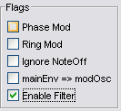
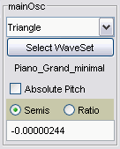
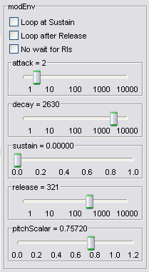
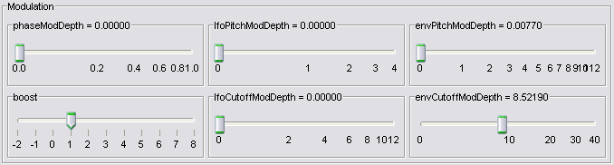
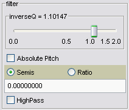

|
|
Mobileer Instrument EditorCONFIDENTIAL and PROPRIETARY - © 2002-6 Mobileer Inc. |
|
|
Mobileer Instrument EditorCONFIDENTIAL and PROPRIETARY - © 2002-6 Mobileer Inc. |
|  | Phase Mod = Enable Phase Modulation, which is very similar to
Frequency Modulation. The output of the modOsc is added to the phase of
the mainOsc. The ratio of the modOsc to the mainOsc determines the harmonic
content of the sound.
Ring Mod = Enable Ring Modulation, where the modOsc and the mainOsc are multiplied together. This generates bell like tones. Ignore Note Off = NoteOff commands have no effect on the sound. A NoteOff is normally used to trigger the release portion of the envelopes. This is useful with Marimbas and other struck instruments. mainEnv => modOsc = If set, use the main envelope to control the modOsc instead of the mod envelope. This is handy if you are using the modEnvelope to control the filter. Enable Filter = Pass the mixture of the two oscillators through a resonant filter. |
|  | Waveform Selector = choose between various waveforms such as
Sine, Sawtooth, Triangle, Square, WhiteNoise, RedNoise, etc.
Absolute Pitch = If set then the oscillator always plays at the same pitch. If not set, then the oscillator will track the MIDI NoteOn pitch parameter. Semis/Ratio = Specify pitch as MIDI semitones relative to the MIDI pitch, or as a frequency ratio. If you want one oscillator to be an octave above the MIDI pitch then use "12.0" semitones, or a ratio of "2.0". When using Absolute Pitch, you can choose between MIDI Pitch, or a frequency in Hertz. Numeric Field = value in semitones, or ratio, etcetera, depending on the format selected. Note that formulas such "sqrt(2.0)" or "22/15" can be used. |
|  | An envelope is a shape normally used to control the amplitude of an
oscillator.
Loop At Sustain = If set, then loop back to the beginning when the sustain point is reached. The output will climb from the sustain level back to 1.0 based on the attack time. Loop After Release = If set, then loop back to the beginning when the release portion is finished. No Wait for Release = If set, then don't pause at the sustain point. Just continue with the release. Useful for percussive sounds. Attack = initial rise time from zero to full amplitude in milliseconds. Decay = fall time from full amplitude to Sustain level in milliseconds. DecayScalar = amount of time subtracted from Decay time at highest pitch. Used to shorten high notes like on a piano. SHould not exceed Decay time. SustainLevel = level at which the envelope will stick until the NoteOff occurs. Release = fall time from SustainLavel to zero. Triggered by NoteOff. |
|  |
| phaseModDepth = If PhaseMod is selected, then this controls
the amount of modulation. If PhaseMod is clear, then this controls the
level of the modOsc in the mix.
lfoPitchMOdDepth = number of semitones that LFO will modulate pitch. envPitchMOdDepth = number of semitones that modEnv will modulate pitch. boost = increases output level by 2^N lfoCutoffMOdDepth = number of semitones that LFO will modulate filter cutoff. envPCutoffMOdDepth = number of semitones that modEnv will modulate filter cutoff. |
|  | The LowPass filter is a two pole State Variable Filter. It can be used
to modify the spectrum of the sound.
InverseQ = inverse of the resonance of the filter. Values closer to zero will increase feedback and self-oscillation in the filter. The pitch control controls the filter cutoff just like the pitch of the oscillators. |